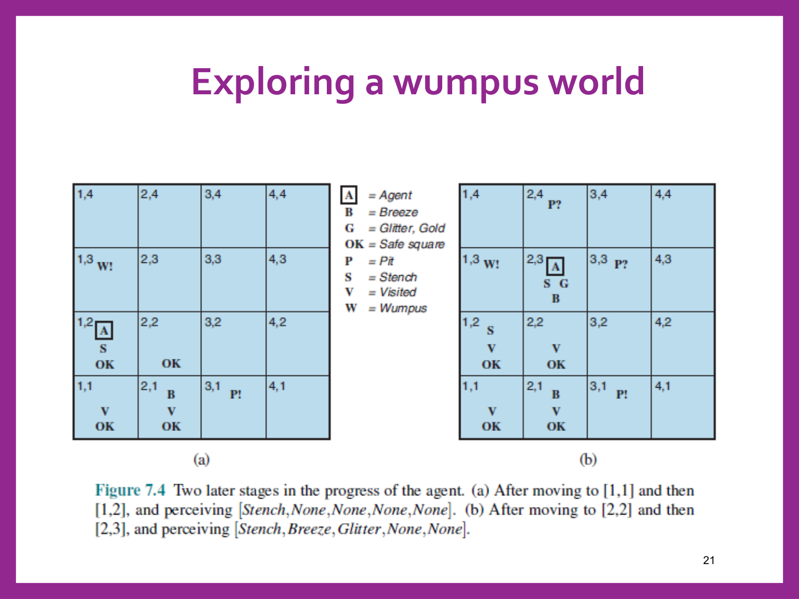

סוכנים לוגיים ולוגיקה פסוקית
⏱ זמן משוער: 60 דק'
0. האינטואיציה — למה סוכן צריך לוגיקה בכלל
עד כה כל סוכן שפגשנו קיבל מראש מפה, עץ משחק או רשימת אילוצים — הבעיה כולה הייתה גלויה. אבל האתגר האמיתי של AI הוא אחר: איך כותבים תוכנית סוכן שמייצרת התנהגות רציונלית מתוך כמות קוד קטנה, במקום להסתמך על טבלה ענקית עם כניסה נפרדת לכל מצב אפשרי בעולם?
הפתרון של הפרק הזה: סוכן מבוסס-ידע (knowledge-based agent) בנוי משני שכבות — למעלה מנוע היסק (inference engine) גנרי, ולמטה Specific Knowledge Base — בסיס הידע הספציפי לתחום. מנוע ההיסק זהה מתחום לתחום; רק ה-KB משתנה. הסוכן צריך להיות מסוגל, בעזרתם, לפעול בעצמו בסביבה: לייצג מצבים ופעולות, להוסיף ידע חדש שמגיע כקלט מהחיישנים, לעדכן את הייצוגים של העולם, ובעיקר — להסיק תכונות נסתרות של העולם ולהסיק פעולות מתאימות.
בשלושת הפרקים הקרובים נבנה את מנוע ההיסק הזה שלב אחר שלב: קודם לוגיקה פסוקית (propositional logic) — הנושא של העמוד הזה — ואחר כך אלגוריתם הרזולוציה להיסק אוטומטי (במודול הבא). כל הדרך נלווה אותנו דוגמה אחת: עולם המפלצת (Wumpus World).
מקור: 12-propositional-logic.pdf (עמ' 2–5)
1. עולם המפלצת (Wumpus World) — הדוגמה שנלווה לאורך כל היחידה
כדי לא לדבר על לוגיקה "באוויר", המרצה בוחרת דוגמה קונקרטית אחת שתלווה את כל הפרק: לוח 4×4, סוכן מתחיל ב-[1,1] ומחפש זהב, כשבדרך מסתתרים בורות (PITs) ומפלצת (Wumpus) יחידה. זו בדיוק אותה דוגמה שנחזור אליה כדי לתרגם תיאורי מצב למשפטים לוגיים, ובמודול הבא — כדי להריץ עליה רזולוציה.
| שורה 4 (עליונה) | |||
|---|---|---|---|
| [1,4] Stench | [2,4] ריק | [3,4] Breeze | [4,4] PIT |
| שורה 3 | |||
| [1,3] Wumpus | [2,3] Breeze+Stench+Gold | [3,3] PIT | [4,3] Breeze |
| שורה 2 | |||
| [1,2] Stench | [2,2] ריק | [3,2] Breeze | [4,2] ריק |
| שורה 1 (תחתונה, START) | |||
| [1,1] START | [2,1] Breeze | [3,1] PIT | [4,1] Breeze |

חוקי העולם, בניסוח PEAS (Performance / Environment / Actuators / Sensors):
- Environment: משבצת אחת מכילה זהב (מיקום לא ידוע) — יש ניצנוץ (Glitter) אם ורק אם נמצאים במשבצת שלו; grab מרים אותו אם הוא במשבצת הנוכחית. משבצת אחת מכילה מפלצת (מיקום לא ידוע) — במשבצות הסמוכות למפלצת יש ריח רע (Stench). ירי הורג את המפלצת רק אם היא מול הסוכן, אחרת היא הורגת אותו; היא צורחת (Scream) כשהיא נהרגת; יש חץ יחיד. במשבצות הסמוכות לבור יש בריזה (Breeze); לכל משבצת הסתברות 0.2 לבור. פגיעה בקיר אינה משפיעה על הניקוד. המשבצת הראשונה תמיד בטוחה — ללא בור או מפלצת.
- Performance measure: gold = +1000, death = −1000, −1 לכל צעד, −10 על שימוש בחץ.
- Actuators: Left turn, Right turn, Forward, Grab, Shoot (רק פעם אחת).
- Sensors: Stench, Breeze, Glitter, Bump, Scream — בכל משבצת הסוכן מקבל וקטור עם כל הפרמטרים הללו.
מקור: 12-propositional-logic.pdf (עמ' 9–11)
2. חקירת עולם המפלצת — מתיאורי חוש לוודאות
עוד לפני שיש לנו נוסחה לוגית אחת, אפשר לראות איך הסוכן "מנמק" בעצמו מהפרספטים (percepts) שהוא קולט. זו בדיוק ההסקה שנפרמל כמשפטים בסעיף הבא.
שלב 1: במצב ההתחלתי [None,None,None,None,None] — הסוכן יודע ש-[1,1] בטוח (OK). לאחר מעבר ל-[2,1] וקליטת [None,Breeze,None,None,None] — הבריזה אומרת שיש בור סמוך, אבל לא איפה בדיוק: גם [2,2] וגם [3,1] מסומנים P? (בור אפשרי, לא ודאי).

שלב 2 (בהמשך): הסוכן חוזר ומטפס דרך [1,1]→[1,2] וקולט [Stench,None,None,None,None] — ריח בלי בריזה כאן. עכשיו אפשר להיות ודאיים: המפלצת חייבת להיות ב-[1,3] (W!), והבור חייב להיות ב-[3,1] (P!) — כי זו המשבצת היחידה שמסבירה את הבריזה שנקלטה קודם ב-[2,1] בלי לסתור את היעדר הבריזה כאן. בהמשך, אחרי [2,2]→[2,3] וקליטת [Stench,Breeze,Glitter,None,None] — הניצנוץ מגלה שהזהב נמצא בדיוק כאן, ב-[2,3].

מקור: 12-propositional-logic.pdf (עמ' 12–13)
3. תחביר וסמנטיקה — משתנים, קשרים וטבלאות אמת
תחביר (syntax): משתנה פסוקי S יכול לקבל ערך T או F בלבד. משפט מורכב נבנה ממשתנים בעזרת קשרים לוגיים (connectives): אם S, S1, S2 הם משפטים, אז גם אלה משפטים:
¬S (שלילה — NOT) S1 ∧ S2 (וגם — AND) S1 ∨ S2 (או — OR) S1 ⇒ S2 (גרירה — IMPLIES) S1 ⇔ S2 (שקילות דו-כיוונית — IFF)
סמנטיקה (semantics): ערך האמת של כל קשר נקבע במלואו על ידי טבלת האמת שלו — בדיוק כמו שהוגדר בשקף:
| P | Q | ¬P | P∧Q | P∨Q | P⇒Q | P⇔Q |
|---|---|---|---|---|---|---|
| false | false | true | false | false | true | true |
| false | true | true | false | true | true | false |
| true | false | false | false | true | false | false |
| true | true | false | true | true | true | true |
מקור: 12-propositional-logic.pdf (עמ' 6–7)
4. דוגמה עובדת — קידוד עולם המפלצת כמשפטים לוגיים
עכשיו אפשר לפרמל בדיוק את מה שראינו בסעיף 2. נגדיר שני משתני יסוד לכל משבצת [i,j]:
- Pi,j אמת אם ורק אם יש בור ב-[i,j].
- Bi,j אמת אם ורק אם יש בריזה ב-[i,j].
עם ההגדרות האלה, הידע שנצבר עד הצעד השני (הסוכן ב-[2,1], קלט בריזה, טרם ביקר ב-[1,2]) מתורגם ל-חמישה משפטים — מילה במילה כפי שנוסחו בשקף:
1. ¬P1,1 2. ¬B1,1 3. B2,1 4. B1,1 ⇔ (P1,2 ∨ P2,1) 5. B2,1 ⇔ (P1,1 ∨ P2,2 ∨ P3,1)
קריאה של כל שורה: (1) אין בור ב-[1,1] (המשבצת ההתחלתית תמיד בטוחה); (2) אין בריזה ב-[1,1] (זו שהתקבלה בפועל); (3) יש בריזה ב-[2,1] (זו שהתקבלה אחרי המעבר); (4)+(5) חוק העולם הכללי — יש בריזה במשבצת מסוימת אם ורק אם יש בור באחת המשבצות הסמוכות אליה.
מקור: 12-propositional-logic.pdf (עמ' 15)
5. מודל, גרירה (Entailment), ותקפות/ספיקות
לוגיקה היא צורה פורמלית לייצג מידע. השאלה המרכזית: לכל היגד, האם הוא אמת (T) או שקר (F) ביחס לעולם נתון? למשל x+2 ≥ y נכון בעולם x=7, y=1, אבל לא נכון בעולם x=0, y=6. הצבה כזו נקראת מודל — ואומרים ש-מודל m הוא מודל של משפט α אם תחת הצבה זו α יוצא אמת.
גרירה — Entailment
גרירה בין שני משפטים אומרת שאחד נובע לוגית מהשני. באופן פורמלי: KB ⊨ α (KB = Knowledge Base) פירושו ש-KB גורר לוגית את α — עבור כל מודל שבו KB אמת, גם α חייבת להיות אמת.
תקפות (Validity) וספיקות (Satisfiability)
משפט תקף (valid) אם הוא אמת בכל המודלים — טאוטולוגיה, למשל True, A∨¬A, A⇒A, (A∧(A⇒B))⇒B. משפט ניתן לסיפוק (satisfiable) אם הוא אמת בחלק מהמודלים, למשל A∨B. משפט הוא סתירה (contradiction) אם אין שום מודל שמספק אותו, למשל A∧¬A. מכאן נובע כלל מפתח: משפט תקף (טאוטולוגיה) אם ורק אם שלילתו אינה ניתנת לסיפוק.
שרשרת השקילויות — הבסיס להוכחה בדרך השלילה
משפט ההיקש (Deduction Theorem): KB ⊨ α אם ורק אם (KB ⇒ α) הוא טאוטולוגיה. משלושת הכללים שלמעלה נגזרת שרשרת שקילויות שלמה:
KB ⊨ α ⇕ (KB ⇒ α) — טאוטולוגיה ⇕ ¬(KB ⇒ α) — סתירה ⇕ ¬(¬KB ∨ α) — סתירה (implication elimination) ⇕ (KB ∧ ¬α) — סתירה (double-negation + de Morgan)
מקור: 12-propositional-logic.pdf (עמ' 16–19)
6. שקילויות לוגיות (Logical Equivalences)
שני משפטים שקולים לוגית (α ≡ β) אם ורק אם הם אמת באותם המודלים בדיוק: α ≡ β אמ"ם α ⊨ β וגם β ⊨ α. הרשימה המלאה כפי שהופיעה בשקף (וחזרה שוב מאוחר יותר בו):
(α ∧ β) ≡ (β ∧ α) commutativity of ∧ (α ∨ β) ≡ (β ∨ α) commutativity of ∨ ((α ∧ β) ∧ γ) ≡ (α ∧ (β ∧ γ)) associativity of ∧ ((α ∨ β) ∨ γ) ≡ (α ∨ (β ∨ γ)) associativity of ∨ ¬(¬α) ≡ α double-negation elimination (α ⇒ β) ≡ (¬β ⇒ ¬α) contraposition (α ⇒ β) ≡ (¬α ∨ β) implication elimination (α ⇔ β) ≡ ((α ⇒ β) ∧ (β ⇒ α)) biconditional elimination ¬(α ∧ β) ≡ (¬α ∨ ¬β) De Morgan ¬(α ∨ β) ≡ (¬α ∧ ¬β) De Morgan (α ∧ (β ∨ γ)) ≡ ((α ∧ β) ∨ (α ∧ γ)) distributivity of ∧ over ∨ (α ∨ (β ∧ γ)) ≡ ((α ∨ β) ∧ (α ∨ γ)) distributivity of ∨ over ∧
מקור: 12-propositional-logic.pdf (עמ' 8, 26)
7. מלכודות למבחן — סיכום
- גרירה = בכל המודלים, לא בחלקם. x+y=4 ⊨ x=4−y נכון, אבל x+y=4 ⊭ (x=3∧y=1) — כי זו רק הצבה אחת מיני רבות עקביות.
- חוקי עולם הם ⇔, לא ⇒. "בריזה אם ורק אם בור סמוך" — אם מגדירים רק כיוון אחד, אי אפשר להסיק מהיעדר בריזה שאין בור, וזה בדיוק הכיוון שהסוכן צריך הכי הרבה.
- תקף / ניתן לסיפוק / סתירה אינם דרגות של אותו דבר — תקף (בכל המודלים) ⊂ ניתן לסיפוק (בחלק מהם); סתירה = אף מודל לא מספק. משפט תקף אמ"ם שלילתו סתירה.
- KB ⊨ α ⇔ (KB∧¬α) סתירה — שרשרת השקילויות של Deduction Theorem. זו לא רק נוסחה לשינון: זה בדיוק העיקרון שמאפשר הוכחה בדרך השלילה, והבסיס לרזולוציה.
- P? (אפשרות שלא הוכחה) ≠ P! (ודאות לוגית) — ראינו זאת ממש בעולם המפלצת: יש הבדל מהותי בין "יש מודל אחד עקבי עם המסקנה" לבין "כל המודלים העקביים מסכימים עליה".
8. בדיקה עצמית
בקידוד חוקי עולם המפלצת בלוגיקה, איזה קשר לוגי מתאר נכון את הכלל "יש בריזה ב-[i,j] אם ורק אם יש בור באחת המשבצות הסמוכות"?
מהי ההגדרה הפורמלית הנכונה לגרירה KB ⊨ α?
לפי משפט ההיקש (Deduction Theorem) ושרשרת השקילויות שנגזרת ממנו, KB ⊨ α שקול לאיזו מהטענות הבאות?
נתון x+y=4. איזו מהטענות הבאות נכונה, בהתאם להגדרת הגרירה?
איזה מהמשפטים הבאים הוא "סתירה" (unsatisfiable) — ולא רק "ניתן לסיפוק"?
מהי השקילות הנכונה של ¬(α ∨ β) לפי חוקי דה-מורגן?
מהו בדיוק "מודל" m של משפט α?
מהו מדד הביצועים (performance measure) הנכון של הסוכן בעולם המפלצת?
סיימתם את הפרק? סמנו אותו כהושלם: